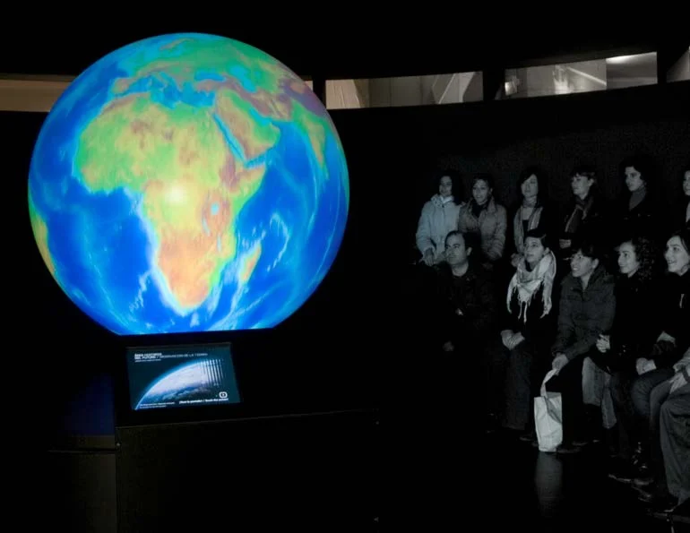

Cultura y museografía
Museo de las Ciencias de Castilla-La Mancha
Museo de las Ciencias de Castilla-La Mancha · Cuenca · 2008
Mi aportación. Dirección de proyecto museográfico

01
Contexto
La renovación de contenidos de un museo de divulgación científica con una relación estrecha con la educación.
02
Necesidad
Actualizar el recorrido y sus recursos sin perder el carácter activo del museo.
03
Estrategia
Dirigí el proyecto desde Optimus, con un equipo de contenidos, diseño, producción e ingeniería. La intervención incluyó ámbitos sobre exploración espacial y energías renovables, con instalaciones y experiencias interactivas.
04
Impacto
La renovación se materializó en nuevos espacios y recursos de visita. La documentación recoge la coordinación con el equipo del museo y asesores científicos durante el desarrollo y el montaje.

Créditos y alcance
Institución destinataria: Museo de las Ciencias de Castilla-La Mancha. Diseño y realización: Optimus Medina Riley.
¿Qué tienes entre manos?
Podemos empezar por una necesidad concreta o por una idea que aún necesita forma.